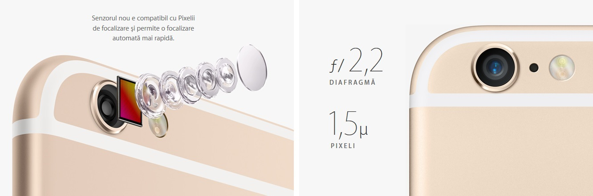
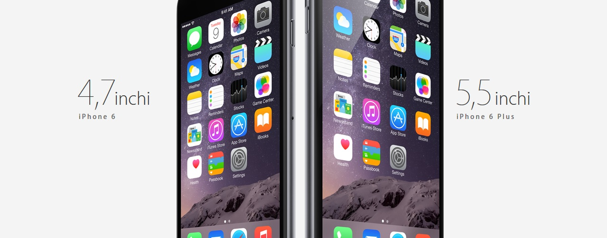
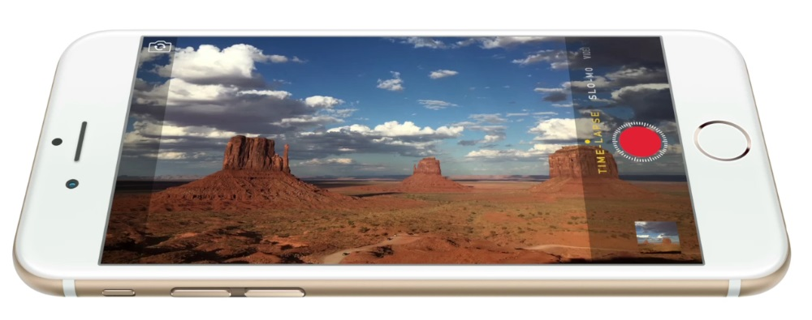

Redare audioFormate audio acceptate: AAC (de la 8 la 320 Kbps), AAC protejat (de la iTunes Store), HE‑AAC, MP3 (de la 8 la 320 Kbps), MP3 VBR, Audible (formatele 2, 3, 4, Audible Enhanced Audio, AAX și AAX+), Apple Lossless, AIFF și WAV Limită maximă volum, configurabilă de utilizator 
TV și videoOglindire AirPlay, poze, audio și ieșire video pentru Apple TV (a doua generație sau un model mai recent) Oglindire video și suport pentru ieșire video: până la 1080p prin adaptorul digital AV Lightning și adaptorul Lightning - VGA (adaptoare comercializate separat) Formate video acceptate: H.264 video de până la 1080p, 60 cadre pe secundă, nivel High Profile 4.2 cu audio AAC-LC de până la 160 Kbps, 48 kHz, stereo audio în formate fișiere .m4v, .mp4 și .mov; video MPEG-4 de până la 2,5 Mbps, 640x 480 pixeli, 30 cadre pe secundă, Simple Profile cu audio AAC-LC de până la 160 Kbps pe canal, 48 kHz, audio stereo în formate de fișier .m4v, .mp4 și .mov; Motion JPEG (M-JPEG) de până la 35 Mbps, 1280x 720 pixeli, 30 cadre pe secundă, audio în format fișiere ulaw, PCM stereo audio în format .avi Ecran mai mare, mai multe de văzut.Oricine poate să facă un ecran mai mare de smartphone. Dar dacă îl măreşti doar de dragul dimensiunii, o să obţii un telefon supradimensionat, incomod şi greu de folosit. iPhone 6 are un ecran care este conceput aşa cum trebuie: este mai mare, dar are aceeaşi lăţime ca şi iPhone 5S. 
Sistem de operareCu actualizări și capabilități noi, uimitoare, pentru funcțiile pe care le folosești zilnic, iOS 8 e cea mai mare lansare iOS de până acum. Colosal de puternic. Extrem de eficient.Având la bază arhitectura pe 64 de biți specifică desktopurilor, noul cip A8 oferă mai multă putere, chiar și pentru un ecran mai mare. Coprocesorul de mișcare M8 colectează în mod eficient informații de la senzorii avansați și noul barometru. Și datorită faptului că durata de autonomie a bateriei este mai mare, iPhone 6 te lasă să faci mai multe, mai mult timp ca oricând. 
Camera revoluției foto, acum și a celei video.iPhone este cea mai utilizată cameră foto din lume. Iar acum camera iSight are un senzor nou cu Pixeli de focalizare și caracteristici video noi, precum 1080p HD la 60 fps, ralanti la 240 fps și mod video în timp accelerat. Astfel, vei avea mai multe motive să imortalizezi mai multe momente și pe video. |